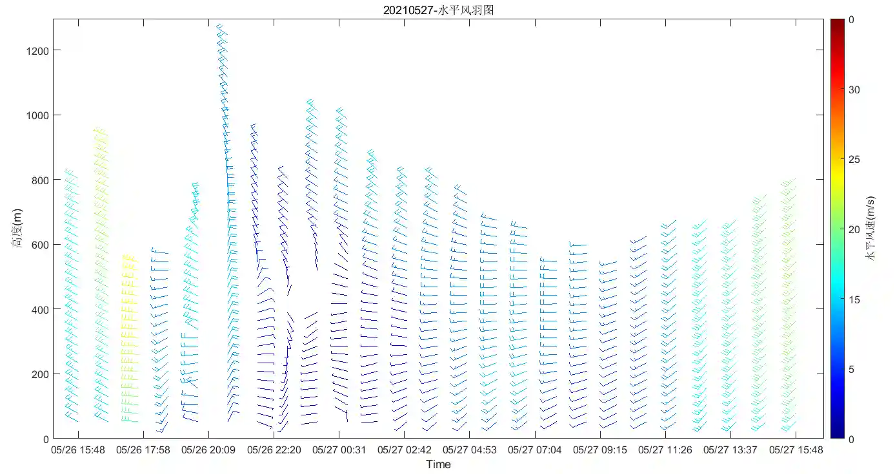
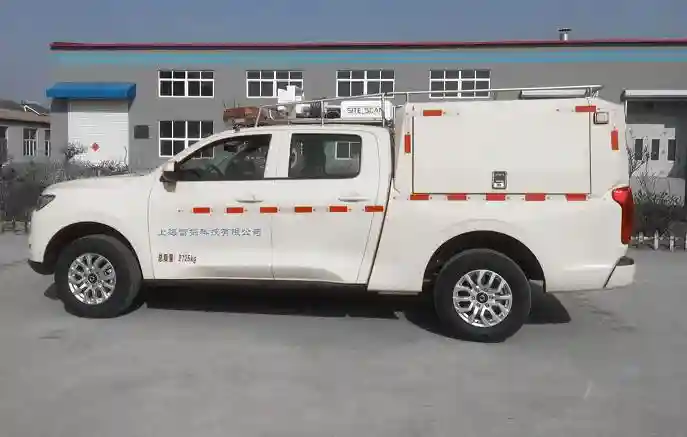

产品展示

MAM系列全要素大气环境监测仪。该仪器可针对常规污染物（SO2、NO2、CO、O3）、颗粒物（PM2.5，PM10、TSP）、气象（温度，湿度、风速、风向、气压）等进行实时监测，并可根据客户需要增设特征污染物（VOC、H2S、NH3）等监测、环境（噪声、紫外、辐射强度）监测。
- 产品特点： MAM系列全要素大气环境监测仪选用电化学、光学等多种传感器，灵敏度高、测量准确、时间分辨率高，而且体积小、重量轻、寿命长、价格低，产品免维护、安装简易快捷，适合网格化、密集化布点。
- 应用领域： MAM系列全要素大气环境监测仪典型应用于智慧路灯系统，实现大气环境要素精细化探测。监测仪可直接安装在智慧路灯的灯杆上，采用市政供电或太阳能供电,采用无线通讯技术，监测仪数据采集器将采集到的气象与环境数据汇集到“云平台”。云端数据可通过相应的手机APP实时访问或历史追询，大气环境信息可在智慧路灯显示屏播报提醒。
激光雨滴谱仪可以监测区分下落中的毛毛雨、大雨、冰雹、雪花、雪球以及各种介于雪花和冰雹之间的降水。可以计算各种降雨类型的强度、总量、能见度，并且进行必要的分析，绘出雨滴谱图，还可以对气象雷达数据进行校正。激光雨滴谱仪广泛应用于交通控制、气象监测与服务、科学研究、机场观测、公路气象监测、水文地理学、气象雷达数据校正等应用领域。
技术指标：
- 降水粒子:
粒径范围：0.062～24.500mm；分辨率：32等级
速度范围：0.050～20.800 m/s；分辨率：32等级
测量精度：±1级 - 降水类型:
8种降水类型（雨、阵雨、毛毛雨、雪、阵雪、雨夹雪、阵性雨夹雪、冰雹） - 测量精度：
大于人工观测相符率的97％ - 降水现象码：
ANA降水天气现象代码，依据中国气象局《地面观测气象数据字典》 - 雨滴谱图：
ANU雨滴谱图，依据中国气象局《地面观测气象数据字典》
特点：
- 全国产自主创新产品
- 空气灰霾、大气透明度监测
- 集采集处理、存储、通讯一体化测量仪器
- 独特的双散射接收器，对太阳和其它杂光干扰降到最低
- 测量范围最大可达80Km
- 校准维护非常简单
- 低功耗、可太阳能供电
- 容易安装，固定与机动两种组配方式可选
测量指标(测量参数)
★气溶胶能见度 测量范围：5m～80km；测量精度：±10%
★光学指标 散射角覆盖 39°～51°前散射
峰值波长 870nm
带 宽 100nm
光谱响应度 最大响应在870nm，0.65 A/W
功能指标(数据输出)
★能见度 实时能见度，10分钟滑动平均能见度、极小值
★雾霾类型 5种雾霾类型（无雾霾、霾、雾或霾、轻雾、雾）
★气溶胶能见度 测量范围：5m～80km；测量精度：±10%
★光学指标 散射角覆盖 39°～51°前散射
峰值波长 870nm
带 宽 100nm
光谱响应度 最大响应在870nm，0.65 A/W
功能指标(数据输出)
★能见度 实时能见度，10分钟滑动平均能见度、极小值
★雾霾类型 5种雾霾类型（无雾霾、霾、雾或霾、轻雾、雾）
TK001型微波辐射计通过对大气微波辐射的遥感测量，反演获得对流层大气温度、湿度廓线、大气积分水汽量及积分云含水量等信息，可实现对对流层大气参数实时连续探测、中尺度天气系统大气层结的监测和预警、解析逆温层结构，评估大气稳定度。该系统灵敏度高，可靠性好，在人工影响天气、短时天气预报、环保、气象综合观测领域有广泛的应用前景。
产品特点:
- 本地化模式，按地区自动匹配最佳模式算法；
- 可根据用户需求二次开发人工影响天气、环保、气象综合观测产品；
- 全天候、全天时工作，采用被动接收方式，本身不发射信号；
- 可靠性高，设备具备完全独立工作能力，适应各种应用环境。
- 数据质控算法，对包括地面参数、亮温、各类廓线等产品数据进行质量控制，保证数据测量精度，提升数据有效率。

激光云高仪（型号C15）由半导体激光泵浦的Nd:YAG偏振脉冲激光器、激光发射和信号接收的光学系统、高灵敏度光电探测器、一个高速多道计数器和计算机以及控制和数据处理软件等组成。
- 半导体Nd：YAG激光器作为光源，穿透性强，能测≥3层云
- 云层分辨率高≤10m
- 可监测气象环境中能见度、PBL层、AOD、PM10、PM2.5。能联网监测，便于了解整个城区云层分布及污染物分布
- 多种数据传输方式
- 工控机内置，便于无网络传输，本地存储
- 野外适应能力强，配备监控模块、雨刷器等辅助设施
- 多台设备网络协调监测软件
TF-001型扫描式多普勒测风激光雷达系统是一种小型、全自动、无环境电磁干扰的多普勒激光雷达，是一种新型的环境遥感监测设备，用于实现地面到高空风场的全天时测量（城市边界层和低空对流层）、风力发电、航空气象保障、环境监测等。系统采用人眼安全的近红外激光探测技术，可静音、安全地实现全自动无人值守观测大气剖面风场

大气颗粒物监测雷达可以探测大气气溶胶（飘尘）垂直分布和时空演变特征；探测云（云底、多层云）垂直分布和时空演变特征；探测大气边界层的结构和时空演变特征；大气颗粒物时空分布监测（PM10）；识别沙尘、烟尘等非球形粒子（扬沙、沙尘暴监测）；探测气溶胶波长指数等。与探空仪等设备配合实现大气温湿度、气压、风向风速等的监测和测量。
主要特点：
- 双波长探测：实现多粒径颗粒物占比探测
- 单模光斑输出，线型稳定；寿命长
- 毫焦级激光能量，适应重污染天气监测
- 降低“焦离”现象，消除杂散光，盲区小
- 大范围动态响应，30m—300m空间分辨率响应，适应性强
- 探测过程自动化，支持长时间无人值守运行
流星雷达工作频率为37.5MHz，探测70-110km的大气风场(0-150m/s)，90km附近的大气温度剖面。流星的速度和轨道等。
技术指标
- 大气风场、流星通量
- 70-110km
- 2km
- 半径200km
- 60min
- 全天候24小时连续观测
- 风场数据、流星分布等
Ku/Ka频段雨衰减监测仪是通过监测来自卫星的信号来实现的，通过记录比较不同雨量天气情况下接收卫星信号的强度变化来统计其雨衰减特性。
- Ku频段工作频率：12.25GHz～12.75GHz；
- Ka频段工作频率：26.5GHz～40GHz；
- 可由上述工作频段（特征频点）推算出10GHz～40GHz电波的雨衰减情况。
- Ku频段输出分辨率：0.2dB；
- Ka频段输出分辨率：0.2dB；
- 雨衰值更新率：1个/秒；
- 卫星信号接收动态范围：≥25dB。
- 中频输入频率：950MHz～1450MHz
- 中频信号输入范围：-40～-80dBm；
- 最大输入电平：≤10dBm；
- 稳定度：≤±1dB/天；
- 工作模式：接收卫星信标或接收广播信道（TDM）。
解决方案
大气网格化
基于NB-IoT技术的大气环境网格化监测系统能够实时采集、处理、显示大气环境数据系统，提供移动端APP和第三方气象应用提供数据支撑。
云水资源监测评估系统
云水资源监测评估系统由云水资源遥测单站组网构成，每个云水资源遥测站主要由一台微波辐射计，多台台雨滴谱仪、数据采集软件、云水资源评估模型、客户端显控软件组成。

气象环境立体走航监测系统
集成微波辐射探测、激光探测及地面气象观测，对流层内地面气象参数、温度廓线、湿度廓线、风廓线等多种要素实时连续探测功能，可方便执行各种无人化、走航化观探测任务。

大气综合探测平台软件
新一代B/S架构的平台应用软件，可扩展风廓线、云雷达、探空仪等数据源，二次开发更多实用产品，真正实现多设备联合观测、多要素融合处理，对用户指导参考意义更大。
技术指标
- 大气风场、流星通量
- 70-110km
- 2km
- 半径200km
- 60min
- 全天候24小时连续观测
- 风场数据、流星分布等
资质证书
质量管理认证

安全管理认证
环境管理认证

企业信誉等级认证
服务特色
服务支持能力
•完善的售前和售后服务体系•7*24小时电话服务
•提供需求分析、系统应用指导、定制开发等服务
技术支持承诺
•本地化及系统二次开发技术支持•免费设备的原理图，操作，使用及维护资料
•免费软件终生升级服务
售后服务承诺
•3年质保和维修•6小时提供解决方案
•48小时内现场处理
关于我们

公司简介
上海雷探科技有限公司，成立于2017年3月。公司位于上海市闵行区元江路3883号上海航天创新创业中心，公司场地总面积600余平方米，有完善的开发、生产、销售、技术支持及售后服务体系。公司主营产品TK001型地基微波辐射计、微波激光一体化复合雷达、MAM型环境气象物联网传感器、一体化多波段雷达电波修正仪、能见度仪、微型多要素气象传感器、X波段天气雷达、K波段雨衰减监测仪器、W波段雨衰减监测仪器、大气剖面测量、北斗气象海洋物联终端、雷电监测预警系统、云水资源监测系统、多源数据融合与处理软件、气象灾害风险评估区划业务系统软件、航海气象信息辅助决策系统等产品和和信息系统。主要服务气象、海洋气象、环保监测、应急减灾部门。
生产环境

制造中心

装配线

生产线
生产线

生产线
生产线

生产线
试验环境

监测实验室
微波暗室
电磁兼容实验室

例行实验室

例行实验室

试验观测场
联系我们
研发制造中心
地址：上海闵行区元江路3883号10幢1单元4301室
电话：021-34710318
传真：021-34711718
售后服务热线：400-902-1922
企业邮箱：shanghaileitan@163.com
北京办事处
地址：北京市朝阳区慧忠里317号106室
联系人：张经理 18600343688
青岛办事处
地址：山东青岛市南区香港中路26号世界贸易大厦B座2201室
联系人：王经理 15689977181